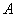
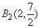
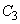
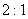
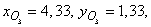

П 7. №1.
Треугольник задан уравнениями трех его сторон:
,
,
.
Определите следующие элементы треугольника:
а) координаты вершин,
б) уравнения высот,
в) уравнения медиан,
г) длины сторон,
д) уравнения биссектрис,
ж) центр и радиус вписанной окружности,
з) центр и радиус описанной окружности,
и) центр тяжести треугольника,
к) внутренние углы треугольника,
л) площадь треугольника.
Решение:
а)
Координаты вершин треугольника находятся как точки
пересечения соответствующих сторон.
Так, например, координаты точки  являются
решением системы уравнений .
Аналогично находятся  и
и
 .
.
и
.б)
Высотой треугольника называется отрезок перпендикуляра,
опущенного из вершины треугольника на противоположную сторону.
Так . Уравнение
высоты ищем как уравнение прямой  , если известен угловой коэффициент
прямой
, если известен угловой коэффициент
прямой  : равный
: равный
, если известен угловой коэффициент
прямой : равный Из условия перпендикулярности прямых .
Поскольку высота проходит
через точку  , уравнение имеет вид: или .
, уравнение имеет вид: или .
, уравнение имеет вид: или .Анализ уравнений сторон  :
и
:
и  :
убеждает нас в том, что , и треугольник является
прямоугольным, значит, уравнение :
:
убеждает нас в том, что , и треугольник является
прямоугольным, значит, уравнение :  :
.
:
.
:
и :
убеждает нас в том, что , и треугольник является
прямоугольным, значит, уравнение : :
.в)
Медианой называется отрезок прямой, соединяющей вершину
треугольника с серединой противолежащей стороны.
Координаты середин сторон находятся по формулам деления
отрезка в данном отношении: , , .
Уравнение медианы получается
как уравнение прямой, проходящей через точки  и
: или
: .
и
: или
: .
и
: или
: .Аналогично : , :
.
г)
Длины сторон найдем по формуле расстояния между двумя
точками:
д)
Биссектрисой треугольника называется лежащий в треугольнике
отрезок прямой, которая делит его внутренний угол пополам.
Укажем два способа нахождения уравнения биссектрисы
треугольника.
1). Биссектриса делит противолежащую сторону в отношении,
пропорциональном прилежащим сторонам.
Если  – точка
пересечения биссектрисы со
стороной , то
, то Координаты точки находим
по формулам деления отрезка в данном отношении  :
.
:
.
:
.Уравнение биссектрисы получается
как уравнение прямой, проходящей через точки и
:
: или .
2). Уравнение биссектрисы может
быть найдено из условия того, что точки биссектрисы равноудалены
от сторон и .
и .Вычислим отклонения точки (х, у), лежащей на биссектрисе, от
сторон и (см. п.2.7):
и (см. п.2.7): и отрицательны, так как начало
координат и точки биссектрисы треугольника лежат по одну сторону от каждой из сторон
и .
и .
Учитывая, что ,
уравнение биссектрисы получим из равенства ,
,,
которое принимает вид:  или .
или .
или .Для вычисления биссектрисы угла применим второй способ.
Отклонение отрицательно,
так как начало координат и биссектриса лежат
по одну сторону от стороны .
.Отклонение положительно,
так как начало координат и биссектриса лежат
по разные стороны от стороны .
.Для биссектрисы справедливо
, то есть или
.
Следовательно, . Таким
образом, : .
уравнение : может быть найдено одним из двух
способов.
ж)
Центр вписанной окружности находится в точке пересечения биссектрис
и треугольника.
Система уравнений, составленная из уравнений биссектрис:

имеет решение , .
Следовательно, центр вписанной окружности находится в точке .
Радиус вписанной окружности найдем как расстояние от точки до стороны : где
, .
: где
, .Таким образом,
з)
Центр описанной окружности находится в точке пересечения серединных
перпендикуляров.
Координаты середин сторон и
найдены в п.в): , .
и
найдены в п.в): , .Уравнения линий серединных перпендикуляров находим аналогично вычислениям в п.б).
Угловые коэффициенты равны
2 и -2 соответственно, и эти прямые проходят через точки и ,
их уравнения имеют вид:
Система уравнений, составленная из уравнений серединных
перпендикуляров:
имеет решение ,  .
.
.Следовательно, центр описанной окружности находится в точке .
Центр описанной окружности прямоугольного треугольника лежит
на середине :
: и)
Центр тяжести треугольника находится в точке пересечения
медиан.
1) Из п.в) имеем систему уравнений для определения координат
центра тяжести как точки пересечения медиан и
:
Система имеет решение ,
. Следовательно, центр тяжести
треугольника находится в точке .
2) Укажем, что медианы треугольника делятся точкой пересечения
в отношении , считая от вершины.
Таким образом, координаты центра тяжести могут быть найдены
как координаты точки , делящей медиану
в отношении
Если воспользоваться формулами деления отрезка в данном
отношении, то координаты точки:
и)
Внутренние углы треугольника могут быть найдены через угловые
коэффициенты прилежащих сторон.
Например, внутренний угол при вершине треугольника
Следовательно, .
к)
По формуле площади треугольника имеем
1)
2) Площадь треугольника может быть вычислена по формуле: ,
где  – полупериметр
треугольника;
– полупериметр
треугольника;  – радиус вписанной
окружности.
– радиус вписанной
окружности.
– полупериметр
треугольника; – радиус вписанной
окружности.Поскольку (кв.
ед.).
Ответ:
а)
б), , ,
в), , ,
г),
д), ,
ж), ,
з), ,
и),
к)30.